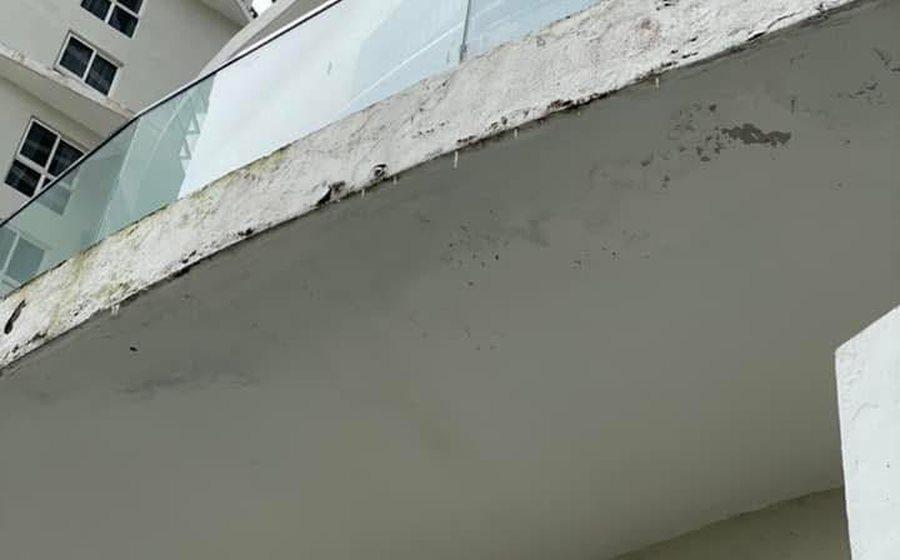
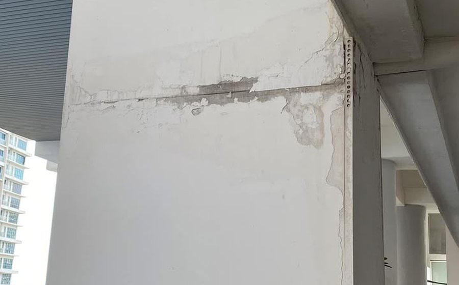
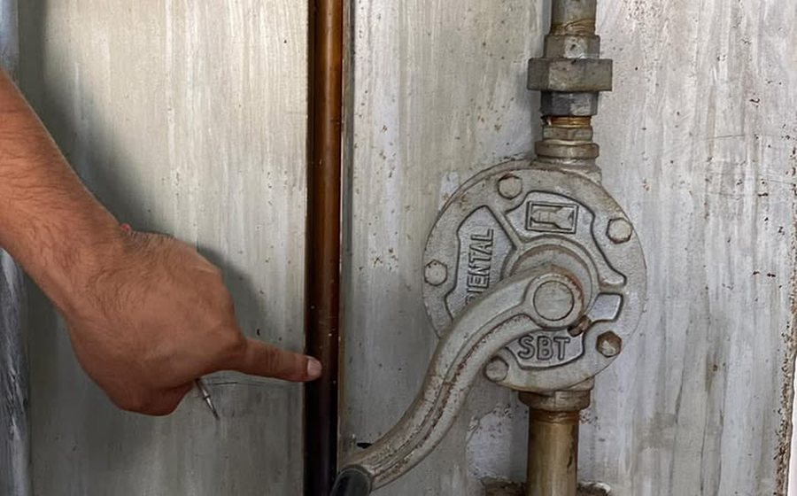
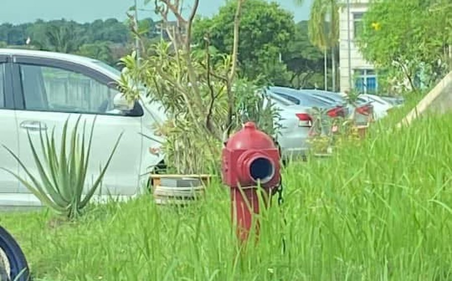

Property & strata management
Based in Johor Bahru
Selected work
Buildings taken over, stabilised and run
Developments across Johor, Melaka, Selangor and Kuala Lumpur, worked on across four roles since 2014 — as Building Executive, Building Manager, and now in business development and project takeover.
Two pieces of work written up in full
Other developments across the portfolio






Photographs are from site work and illustrate the type of work described. They are not necessarily images of the development named on the card.
Every development, by category
Projects managed
- Villa Ros Townhouses, Tampoi JB
- Park Avenue, Tampoi JB
- Eco Cascadia, Setia Indah, JB
- Iskandar Residences Medini, Iskandar
- Greenfield Regency, JB
- Southkey Mosaic, JB
- The Lakefront Southkey, JB
- Bayu Puteri 1, JB
- Habitat Condominium, JB
Projects stabilised
- The Shore Melaka, JB
- Encorp Marina, JB
- SKS Habitat Larkin, JB
- Avira Iskandar, JB
- Laguna JB
- Riverria Condovilla Tampoi, JB
- Seri Mutiara Seri Alam, JB
- Bina Park Seri Alam, JB
- Alpinia Kulai
- 1 Tebrau JB
- Vista Seri Alam, JB
Selected projects
- Residensi Neksus Taman Pertama — MKH Development Berhad
- Kajang 2 Residence — Parkland
- Laman Segar Hijau — Lim Seong Hai
- Twin Danga Residence, JB
- Coronation Square JB
- Twin Tower Residence, JB
- Molek Pulai, Taman Molek, JB
- Ekoflora Ecoworld, JB
- Bina Park Masai JB
- Teluk Tropikana JB
- Indah Villa JB
- Lavender Pulai Mutiara, Pulai, JB
- Aster Pulai Mutiara, Pulai, JB
- D'Lagoon Austin, JB
- D'Camelia Austin, JB
- Ion Axxes Medini, JB
- The Quartz Melaka
- CP Perdana Cheras
- Forest Green Park Kajang
- Green Avenue Condominium KL